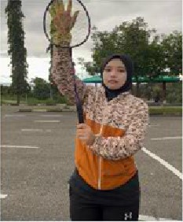
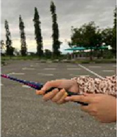
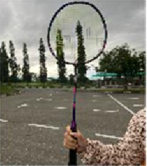
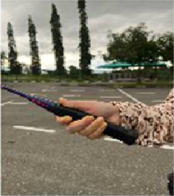
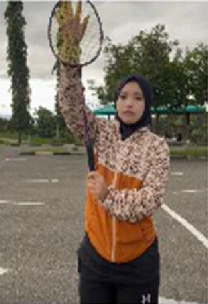
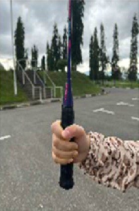

KEMAHIRAN MEMEGANG RAKET BADMINTON
1. Pegang Hadapan (Forehand)
|
 1. Buka tapak tangan kemudian letak di kepala Raket |
 2. Turunkan tangan hingga ke pemegang(handle) kemudian genggam pemegang badminton berbentuk C |
 3. Gambar di atas menunjukkan cara memegang badminton dalam keadaan menegak |
|---|
2. Pegang Kilas (Backhand)
|
1. Buka tapak tangan seperti hi-5, kemudian letak di kepala Raket seperti gambar di atas |
2. Turunkan tangan hingga ke pemegang(handle) raket |
 3. genggam handle raket umpama memegang penyapu |
|---|
3. Pegang Rata (Flat)
|
 1. Sama seperti yang lain, letak tapak tangan di kepala raket kemudian turunkan hingga ke handle raket |
 2. genggam tangan umpama menumbumbuk seseorang |
|---|